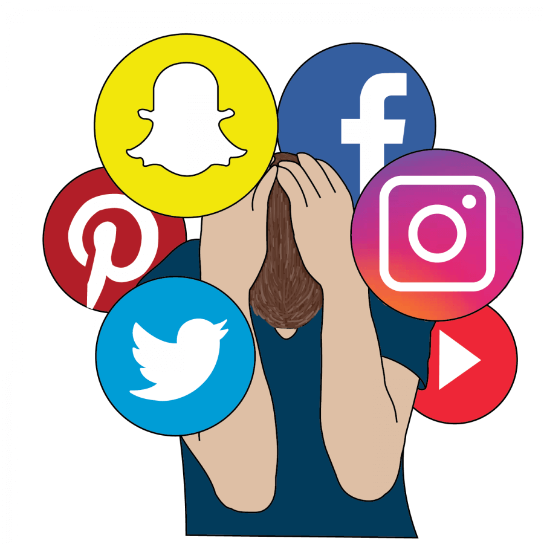

The Impact of Social Media and Strategies for a Healthy Relationship with Technology
Social media has a significant impact on our lives, influencing how we connect, communicate, and consume information. While it offers many benefits, it's essential to maintain a healthy relationship with social media and technology. This blog post will explore the effects of social media and provide strategies for managing its use healthily.
The Impact of Social Media:
- Positive Effects: Social media can help you stay connected with friends and family, build professional networks, and discover new interests and communities.
- Negative Effects: Excessive use of social media can lead to issues such as anxiety, depression, and reduced attention span. It can also contribute to feelings of inadequacy and social isolation due to constant comparison with others.
Developing a healthy relationship with social media and technology involves setting boundaries, being mindful of your usage, and taking regular breaks. By doing so, you can enjoy the benefits of digital connectivity without compromising your well-being. Practicing these strategies can lead to a more balanced and fulfilling digital life.
Setting Boundaries:
- Time Limits: Set daily or weekly limits on social media usage. Use built-in tools on your devices to monitor and restrict usage.
- Tech-Free Times: Designate certain times of the day, such as during meals or before bed, as tech-free to encourage offline activities and better sleep.
Digital Detox:
- Scheduled Breaks: Plan regular breaks from social media, ranging from a few hours to several days, to reset your relationship with technology.
- Alternative Activities: Engage in offline activities that you enjoy, such as reading, exercising, or spending time outdoors, during your digital detox.
Mindful Consumption:
- Curate Your Feed: Follow accounts that inspire and uplift you, and unfollow or mute those that cause stress or negativity.
- Purposeful Use: Use social media with intention, focusing on meaningful interactions and content that adds value to your life.
